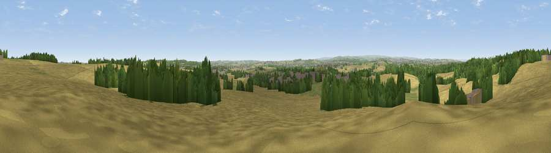

Viewpoint near Great Houghton
#20621 in England · top 31% of its area beats it · near Great HoughtonThe view, rendered

A 360° render of this exact spot computed from the terrain model, tree cover and land cover — summer colours, afternoon light, calibrated against photographs of famous viewpoints. Real trees, hedges and buildings will differ in detail.
The panorama
Grey silhouette: terrain skyline in each direction (720 bearings, Earth curvature and refraction included). Dashed green: skyline with trees (+15 m) and buildings (+8 m) as obstacles. Blue strip: how far the ground is visible on each bearing.
Where the view opens
Wedge length = distance to the farthest visible ground on that bearing (vegetation-aware). Rings at 10, 25 and 50 km.
What fills the view
65% cropland · 17% woodland · 11% grassland · 6% built-up
Angular shares of the visible panorama (visual magnitude), not map area. Landscape diversity 0.44 (0–1 Shannon).
Key numbers
More beautiful places nearby
The staircase of upgrades: each row has a higher view potential than everything closer. Driving times are estimates from straight-line distance, calibrated against real road routing — check an actual route before setting out.
| Place | Direction | Drive | Score |
|---|---|---|---|
| Viewpoint near Little Houghton | SSW · 2 km | ~5 min | 53.9 |
| Viewpoint near Grimethorpe | NNW · 3 km | ~6 min | 63.8 |
| Hoober Stand | SSW · 9 km | ~18 min | 64.2 |
| Hoyland Lowe | SW · 10 km | ~19 min | 68.7 |
| Viewpoint near Whitley | SW · 16 km | ~29 min | 72.1 |
| Viewpoint near Wharncliffe Side | SW · 16 km | ~29 min | 75.0 |
| Viewpoint near Wharncliffe Side | SW · 16 km | ~29 min | 75.2 |
| Viewpoint near Greenfield | W · 43 km | ~63 min | 76.0 |
53.56346, -1.34736 · source: screening · position refined by local search. Computed location — check access rights before visiting.